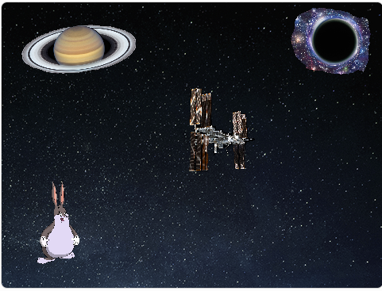

Chungus Quest Game
This game is coded through Scratch, aid a chungus on their way to freedom. You will not regret it.

Python Collaborative Project
In my AP Computer Science Class, 4 team members and I coded a character through CMU's Python. We created a 'Fall Guy' holding a kendo sword, riding a skateboard while golfing and eating a baozi.

Typing Genius Hour
I spent 8 weeks learning touch-typing and increasing my words per minutes. Prior to this course I was averaging 74 WPM on most typing exams, now I top out at around 91 WPM.